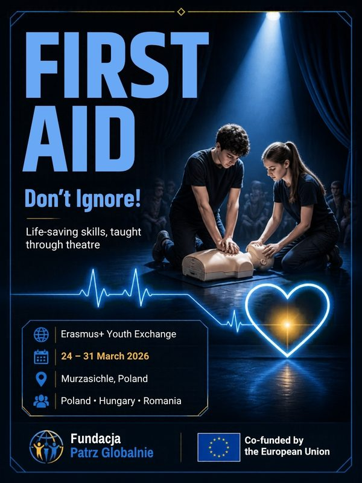
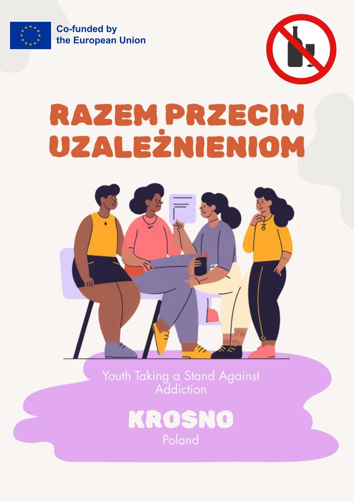
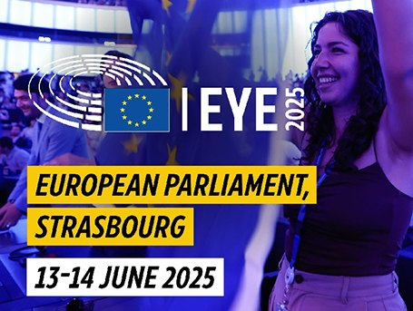

Projects
All projects
Erasmus+ youth exchanges and youth initiatives where art, technology and sustainability meet. Newest first.

First Aid – Don’t Ignore! 33 participants from Poland, Hungary and Romania learned CPR, AED use and first aid, then taught it through forum theatre.
Together Against Addictions 15 young people turned lived experience into civic action: research, a danger zone map, theatre and a 350-person conference. Art Meets AI 2.0: The Next Act
Young performers from Poland, Bulgaria, Türkiye and Moldova create AI-enhanced theatre for an audience of 1,000+.
Art Meets AI 2.0: The Next Act
Young performers from Poland, Bulgaria, Türkiye and Moldova create AI-enhanced theatre for an audience of 1,000+. Follow Your Drums!
Collected waste turned into percussion, one group song, AI music videos and a live concert.
Follow Your Drums!
Collected waste turned into percussion, one group song, AI music videos and a live concert.
EYE 2025: Democracy Under Digital Siege Our workshops at the European Youth Event on deepfakes, AI and democracy, featuring John Doe. EcoArt: Turning Trash into Treasure
28 young people from Poland, Hungary, Lithuania and Romania turned waste into sculptures, mosaics and toys.
EcoArt: Turning Trash into Treasure
28 young people from Poland, Hungary, Lithuania and Romania turned waste into sculptures, mosaics and toys. Fashion Forward: Recycled Runway
28 young people from Poland, Portugal, North Macedonia and Hungary took on fast fashion with an upcycled catwalk.
Fashion Forward: Recycled Runway
28 young people from Poland, Portugal, North Macedonia and Hungary took on fast fashion with an upcycled catwalk. Art Meets AI: Exploring New Forms of Performance
A play directed by an AI narrator, performed by 28 young people for 600+ students and teachers.
Art Meets AI: Exploring New Forms of Performance
A play directed by an AI narrator, performed by 28 young people for 600+ students and teachers.